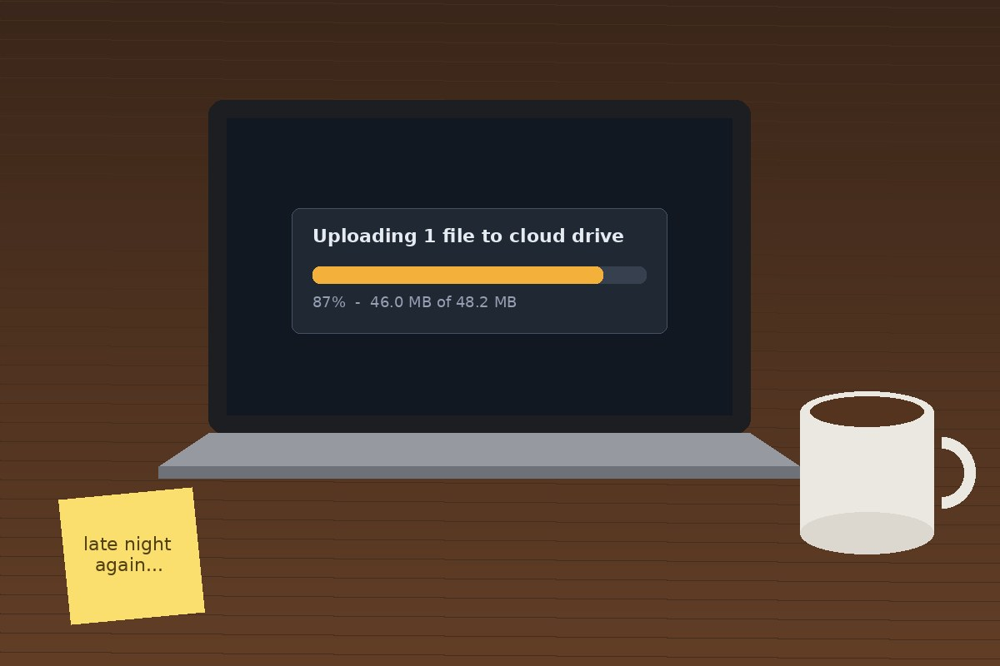

Mission 07 · Metadata
What the photo remembers
The insider denies everything. But minutes after the download, their account posted this photo with the caption “late night again”. Photos carry more than pixels.

IMG_2247.jpgJPEG · 65 KB · Original file from the post
Download original

Digital photos store hidden EXIF metadata: the camera model, the time the photo was taken, sometimes GPS location, the author, and a description.
Check this photo's metadata. One field holds something that has no business being in a photo. Decode it.
Flag captured